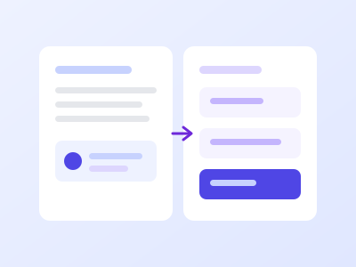

Docs that stay current
Write specs and notes next to the work they describe. Every doc keeps its history, so you can see what changed and who changed it.
Explore docsNimbus brings your team's docs, tasks and conversations into one calm workspace, so nothing gets lost between apps.

Features
Every part of Nimbus writes to the same workspace, so the thing you wrote this morning is already where you need it this afternoon.
Write specs and notes next to the work they describe. Every doc keeps its history, so you can see what changed and who changed it.
Explore docsTurn any line of a doc into a task with one click. Due dates and owners show up on the board without anyone copying them across.
Explore tasksThreads live beside the doc or task they are about, so a decision made on a Friday is still findable three months later.
Explore chatSearch runs across docs, tasks and threads at the same time. Filter by person or by date when the first page is not enough.
Explore searchGive a team access to a space and everything inside it follows.
Explore permissionsImport from Notion, Confluence, Jira and Trello. The links between imported pages are rewritten as they come across, so nothing you click on dead-ends on the first day.
Explore importsGuides
Short walkthroughs from teams who moved off four tools and wrote down what worked.

Design finishes a doc, engineering picks up the tasks it produced. No status call, no one asking where the latest version lives.
Read the guideA daily thread that pulls in yesterday's closed tasks automatically, so people only write the part a machine cannot.
Read the guideA small naming convention and a few tags turn a year of docs, tasks and threads into something you can search in one box.
Read the guide